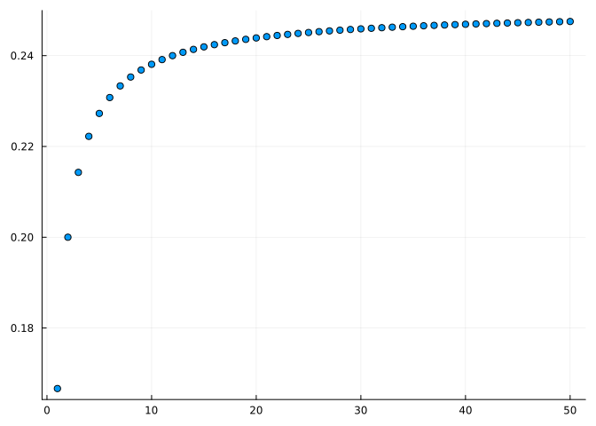
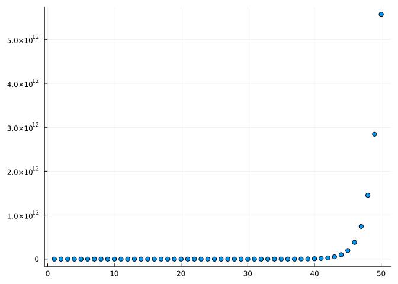
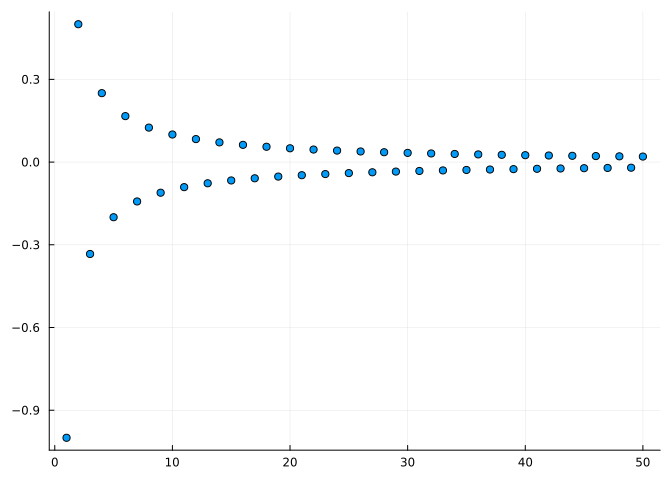
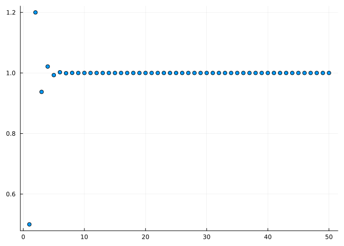
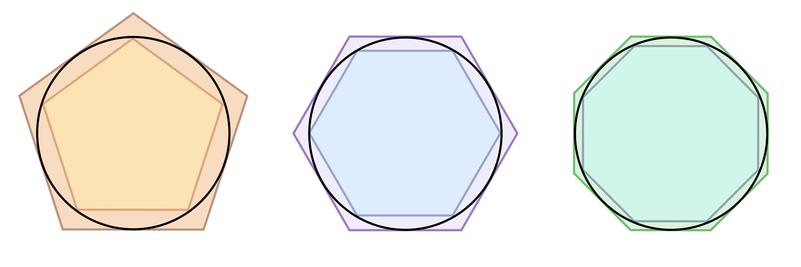
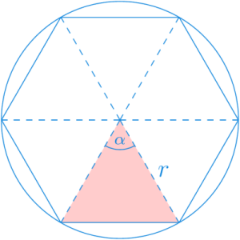
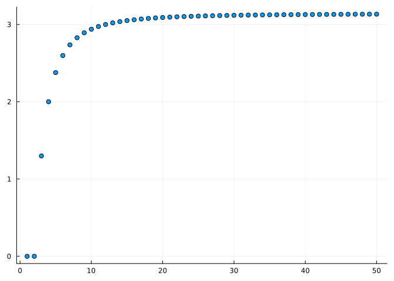

using SymPy # Para el cálculo simbólico de límites.
using Plots # Para el dibujo de gráficas.
using LaTeXStrings # Para usar código LaTeX en los gráficos.2 Sucesiones de números reales
2.1 Ejercicios Resueltos
Para la realización de esta práctica se requieren los siguientes paquetes:
Ejercicio 2.1 Dar los 10 primeros términos de las siguientes sucesiones:
- \((2n+1)_{n=1}^\infty\)
Pista
Definir una función para el término general y aplicar la función a los naturales de 1 a 10 usando compresiones de arrays.
Solución
x(n) = 2n + 1
print([x(n) for n = 1:10])[3, 5, 7, 9, 11, 13, 15, 17, 19, 21]- \(\left(\frac{1}{n}\right)_{n=1}^\infty\)
Solución
# Como reales
x(n) = 1 / n
print([x(n) for n = 1:10])
# Como racionales
x(n) = 1//n
print([x(n) for n = 1:10])[1.0, 0.5, 0.3333333333333333, 0.25, 0.2, 0.16666666666666666, 0.14285714285714285, 0.125, 0.1111111111111111, 0.1]Rational{Int64}[1//1, 1//2, 1//3, 1//4, 1//5, 1//6, 1//7, 1//8, 1//9, 1//10]- \(\left((-1)^n\right)_{n=1}^\infty\)
Solución
x(n) = (-1)^n
print([x(n) for n = 1:10])[-1, 1, -1, 1, -1, 1, -1, 1, -1, 1]- \(\left(\left(1+\frac{1}{n}\right)^n\right)_{n=1}^\infty\)
Solución
x(n) = (1 + 1 / n)^n
print([x(n) for n = 1:10])[2.0, 2.25, 2.3703703703703702, 2.44140625, 2.4883199999999994, 2.5216263717421135, 2.546499697040712, 2.565784513950348, 2.581174791713198, 2.5937424601000023]- \(x_1=1\) y \(x_{n+1}=\sqrt{1+x_n}\) \(\forall n\in\mathbb{N}\)
Solución
x(n) = n == 1 ? 1 : sqrt(1+x(n-1))
print([x(n) for n = 1:10])Real[1, 1.4142135623730951, 1.5537739740300374, 1.5980531824786175, 1.6118477541252516, 1.616121206508117, 1.6174427985273905, 1.617851290609675, 1.6179775309347393, 1.6180165422314876]Ejercicio 2.2 Dibujar en una gráfica los 50 primeros términos de las siguientes sucesiones y deducir si son convergentes o no. En el caso de que sean convergentes, dar un valor aproximado de su límite.
Pista
Definir una función para el término general y aplicar la función a los naturales de 1 a 50 usando compresiones de arrays como en el ejercicio anterior. Después usar la función scatter del paquete Plots para dibujar el array de términos.
- \(\left(\frac{n}{4n+2}\right)_{n=1}^\infty\)
Solución
using Plots
x(n) = n / (4n + 2)
scatter([x(n) for n = 1:50], legend=false)
La sucesión converge al número \(0.25\).
- \(\left(\frac{2^n}{n^2}\right)_{n=1}^\infty\)
Solución
using Plots
x(n) = 2^n / (4n + 2)
scatter([x(n) for n = 1:50], legend=false)
La sucesión diverge.
- \(\left(\frac{(-1)^n}{n}\right)_{n=1}^\infty\)
Solución
using Plots
x(n) = (-1)^n / n
scatter([x(n) for n = 1:50], legend=false)
La sucesión converge al \(0\).
- \(\left(\left(1+\frac{1}{n}\right)^n\right)_{n=1}^\infty\)
Solución
using Plots
x(n) = (1 + 1 / n)^n
scatter([x(n) for n = 1:50], legend=false)
La sucesión converge aproximadamente a \(2.7\).
- \(x_1 = 2\) y \(x_{n+1}=1+\frac{1}{x_n}\) \(\forall n\in\mathbb{N}\)
Solución
using Plots
x(n) = n == 1 ? 2 : 1 + 1 / x(n-1)
scatter([x(n) for n = 1:50], legend=false)
La sucesión converge aproximadamente a \(1.62\).
Ejercicio 2.3 Calcular el límite, si existe, de las siguiente sucesiones.
- \(\left(\frac{1}{n}\right)_{n=1}^\infty\)
Pista
Definir una función para el término general usar la función limit del paquete SymPy para calcular el límite de la sucesión.
Solución
using SymPy
@syms n::(integer, positive) # Declaración de la variable simbólica n.
x(n) = 1/n
limit(x(n), n=>oo)0- \(\left((-1)^n\right)_{n=1}^\infty\)
Solución
@syms n::(integer, positive)
x(n) = (-1)^n
limit(x(n), n=>oo)nan- \(\left(\left(1+\frac{1}{n}\right)^n\right)_{n=1}^\infty\)
Solución
@syms n::(integer, positive)
x(n) = (1 + 1 / n)^n
limit(x(n), n=>oo)ℯEjercicio 2.4 En el siglo III A.C Arquímedes usó el método por agotamiento para calcular el área encerrada por una circunferencia (y de paso el valor de \(\pi\)). La idea consiste en inscribir la circunferencia en polígonos regulares con un número de lados cada vez mayor.

El área de estos polígonos puede calcularse fácilmente descomponiendo los polígonos regulares en triángulos como en el siguiente ejemplo.

En el caso de los polígonos inscritos dentro de la circunferencia, como dos de los lados siempre coinciden con el radio de la circunferencia \(r\), el área del polígono de \(n\) lados puede calcularse con la fórmula
\[ a_n = \frac{1}{2}nr^2\operatorname{sen}\left(\frac{360}{n}\right) \]
- Calcular el área de los polígonos de \(10^i\) lados, para \(i=1,\ldots, 6\) tomando \(r=1\).
Solución
a(n) = n*sind(360/n)/2
print([a(10^i) for i = 1:6])[2.938926261462366, 3.1395259764656687, 3.1415719827794755, 3.141592446881286, 3.141592651522708, 3.1415926535691225]- Dibujar con los primeros 50 términos de la sucesión de las areas de los polígonos tomando \(r=1\).
Solución
using Plots
a(n) = n*sind(360/n)/2
scatter([a(n) for n = 1:50], legend=false)
- Calcular el límite de la sucesión de las areas de los polígonos tomando \(r=1\).
Solución
using SymPy
@syms n::(integer, positive)
a(n) = n*sin(2pi/n)/2
limit(a(n), n=>oo)3.14159265358979- Usando el resultado anterior, calcular el area del círculo de radio \(r\).
Solución
using SymPy
@syms n::(integer, positive), r
a(n) = n*r^2*sin(2pi/n)/2
limit(a(n), n=>oo) 2
3.14159265358979⋅r 2.2 Ejercicios propuestos
Ejercicio 2.5 Calcular el décimo término de la sucesión \(\left(\frac{3n^2+n}{6n^2-1}\right)_{n=1}^\infty\).
Ejercicio 2.6 Calcular los 10 primeros términos de la sucesión \(\left(\frac{3n^2+n}{6n^2-1}\right)_{n=1}^\infty\) y averiguar hacia dónde converge.
Ejercicio 2.7 A la vista de la gráfica de los 20 primeros términos de la sucesión \(\left(\frac{2^n}{n!}\right)_{n=1}^\infty\), ¿crees que la sucesión converge?
Ejercicio 2.8 A la vista de la gráfica de los 10 primeros términos de la sucesión \(\left(\frac{n^n}{n!}\right)_{n=1}^\infty\), ¿crees que la sucesión converge?
Ejercicio 2.9 A la vista de la gráfica de los 20 primeros términos de la sucesión dada por \(x_1=1\) y \(x_{n+1}=\sqrt{x_n+2}\) \(\forall n\in \mathbb{N}\), ¿crees que la sucesión converge?
Ejercicio 2.10 ¿Cuál es el límite de la sucesión \(\left(\left(1+\frac{2}{n}\right)^n\right)_{n=1}^\infty\)